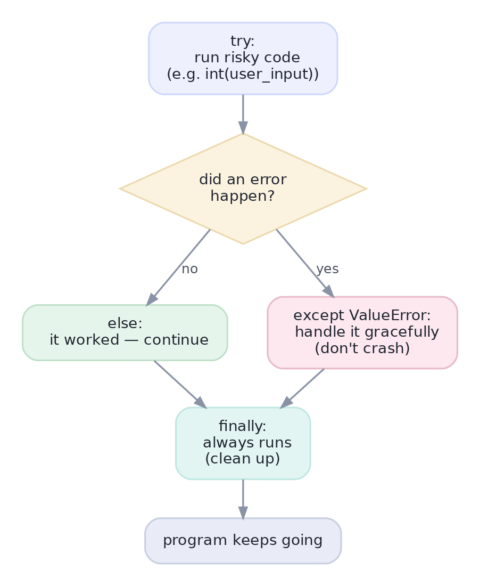

Writing Functions & Clean Code
Reusable functions, default arguments, and graceful error handling with try/except — the leap to code you can trust.
In Lesson 1.2 you met functions in miniature. As your analyses grow, two things happen: you find yourself repeating the same logic, and your code crashes on the one weird row you didn't expect. The cure for both is here — functions that package logic for reuse, and error handling that lets a program stumble gracefully instead of falling over. This is the leap from 'a script that ran once' to 'code you can trust.'
Concept · reusable logicFunctions, a little deeper
A function packages logic behind a name so you write it once and reuse it. Beyond the basics from 2.1, three features make functions powerful:
- Default arguments: give a parameter a fallback value so callers can omit it —
def greet(name, greeting="Hello"). - Keyword arguments: call with names for clarity —
greet(name="Ada")— which also lets you skip past defaults. - Returning multiple values:
return lo, hihands back a tuple you can unpack withlo, hi = ....
A one-line docstring just under def documents what the function does — a small habit that makes code (and your future self) far happier.
Concept · don't crashHandling errors: try / except
When code might fail — converting bad text to a number, opening a missing file — wrap it in a try/except block. Python tries the risky code; if an exception (error) occurs, it jumps to the matching except instead of crashing. Optional else runs when no error happened, and finally runs no matter what (for cleanup).

except handles it gracefully; finally always runs; and the program keeps going instead of stopping dead.Catch specific exceptions (except ValueError:), not a bare except:. A bare except swallows every error — including typos and bugs in your own code — hiding problems you needed to see. Name the error you actually expect, and let the unexpected ones surface.
Concept · structureOrganizing code: modules & imports
A module is just a .py file full of functions and values; importing it gives you access to that code. You already do this with import pandas as pd and from math import sqrt. Python's vast standard library (batteries included — math, datetime, json, random, …) and the wider ecosystem (NumPy, pandas, scikit-learn) are all imported the same way. As your project grows, you split your own code into modules and import across them, keeping each file focused.
Worked exampleReusable, crash-resistant code
Two small functions that show defaults, a docstring, and graceful error handling — the building blocks of dependable code.
def safe_average(values, default=0.0):
"""Return the mean of values, or `default` if the list is empty."""
if not values: # an empty list is 'falsy' (Lesson 1.2)
return default
return sum(values) / len(values)
print(safe_average([10, 20, 30]))
print(safe_average([], default=-1)) # uses the default-arg fallback
def parse_price(text):
"""Convert text to a float, or None if it can't be parsed."""
try:
return float(text)
except ValueError: # catch ONLY the expected error
return None
for t in ["19.99", "free", "5"]:
print(f"{t!r:>7} -> {parse_price(t)}")20.0
-1
'19.99' -> 19.99
'free' -> None
'5' -> 5.0safe_average never divides by zero because it handles the empty case; parse_price never crashes on bad text because it catches ValueError and returns None to signal failure. Defensive little functions like these are what keep a 5-million-row pipeline from dying on row 4,000,001.
★ Key points to remember
- A function packages reusable logic; default arguments make parameters optional, and you can
returnmultiple values as a tuple. - Add a one-line docstring under
defto document what a function does. - Wrap risky code in try/except to handle errors gracefully;
finallyalways runs. - Catch specific exceptions, never a bare
except:(which hides real bugs). - A module is a
.pyfile;importbrings its code in — from the standard library or your own files.
def scale(x, factor=2): return x * factor let you do?except ValueError: over a bare except:?try / except / finally, when does the finally block run?◆ Practice▸
clamp(x, low=0, high=100) that returns x limited to the range [low, high]. What does clamp(150) return?Show solution & reasoning
def clamp(x, low=0, high=100):
"""Limit x to the range [low, high]."""
return max(low, min(x, high))min(x, high) caps the top, max(low, ...) lifts the bottom. With defaults low=0, high=100, clamp(150) returns 100, and clamp(-5) returns 0.
Show solution & reasoning
def to_age(text):
try:
return int(text)
except (ValueError, TypeError):
return Noneint(text) raises ValueError for non-numeric text and TypeError for None; catching both returns None for any unparseable entry, so the program continues. You'd then decide how to handle the Nones (drop, flag, or impute — Lesson 1.10).
◎ Deep dive: pure functions, DRY & type hints, and raise vs. handle▸
Pure functions and side effects. A pure function depends only on its inputs and returns a value without changing anything outside itself (no modifying global variables, no printing, no writing files). Pure functions are easy to test, reuse, and reason about, because calling them can't surprise you. Side effects (I/O, mutation) are necessary somewhere, but isolating them — keeping most functions pure and pushing side effects to the edges — is a hallmark of clean, reliable code.
DRY and type hints. DRY ('Don't Repeat Yourself') is the principle behind functions: when you copy-paste logic a third time, extract it into a function so a fix happens in one place. Type hints — def avg(values: list[float]) -> float: — document the expected input and output types. Python doesn't enforce them at runtime, but they make code self-explanatory and let editors and tools catch mistakes early. Both habits scale a notebook into a maintainable codebase.
Raise vs. handle. Sometimes the right move isn't to handle an error but to raise one: raise ValueError("age must be positive") stops bad data from flowing silently downstream. The rule of thumb: handle errors you can sensibly recover from (a bad row you can skip or default), and raise for conditions that mean your assumptions are broken and continuing would produce garbage. Failing loudly and early beats a wrong answer computed quietly.
Coding screens reward clean, defensive functions: clear names, a docstring, sensible defaults, and handling of the empty/edge case. If asked to parse or transform messy input, wrap the risky part in a specific try/except and explain that you'd fail loudly (raise) when continuing would corrupt results. That judgment — recover vs. raise — signals real engineering maturity.